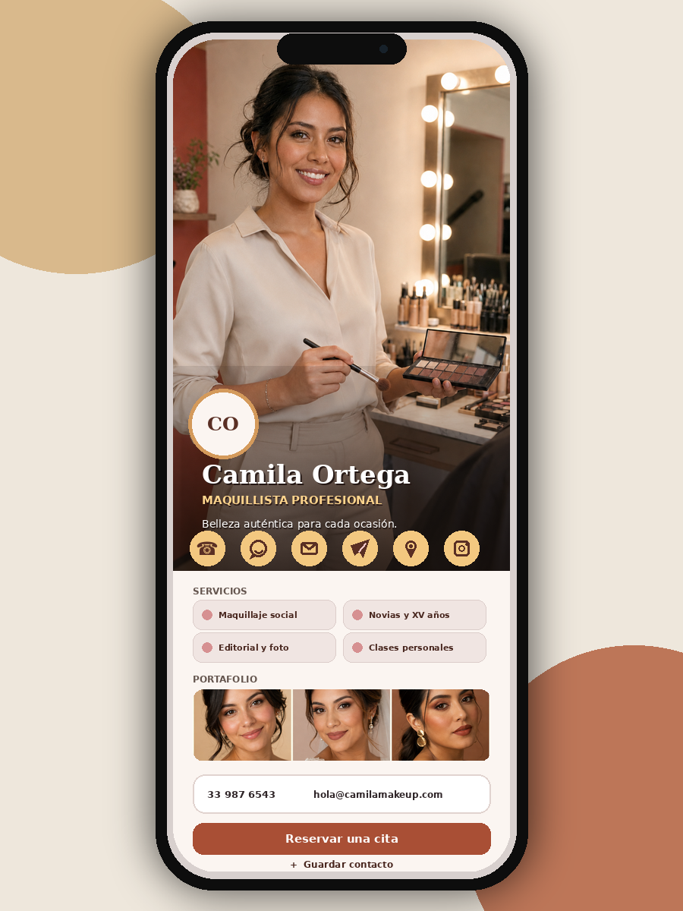
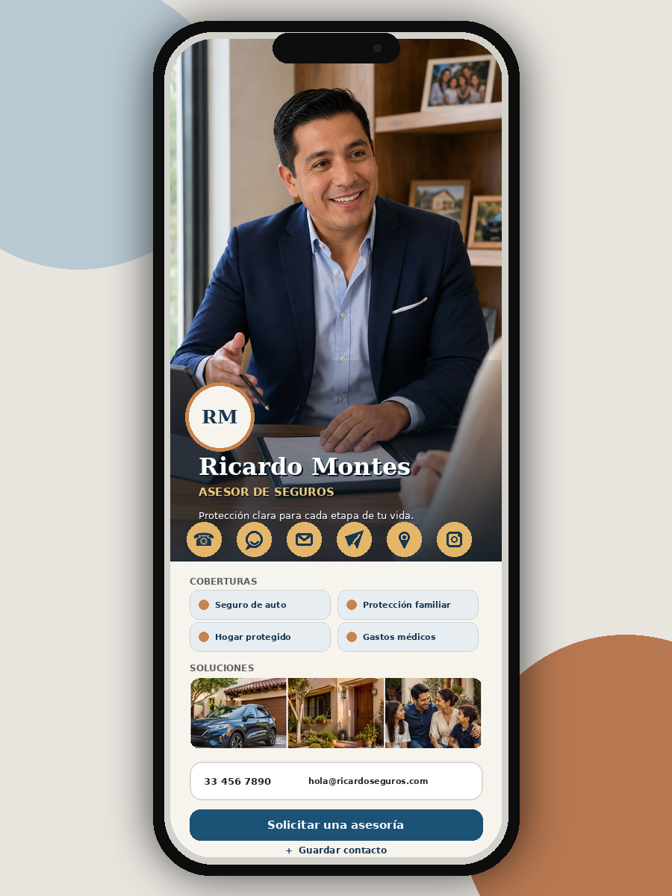
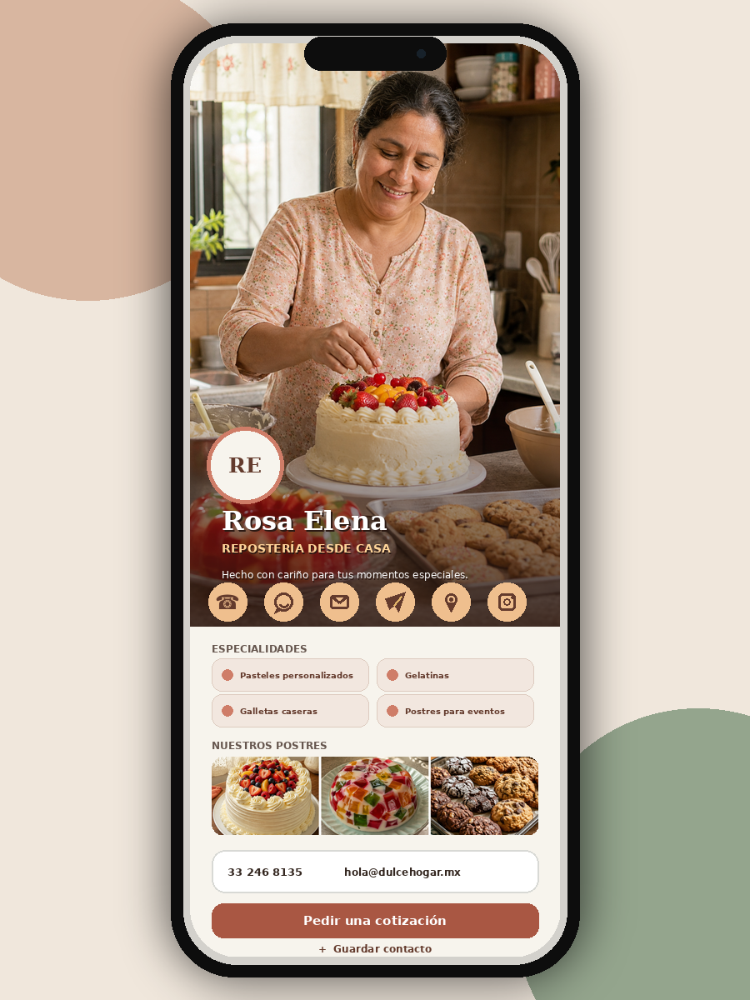

Contacto inmediato
Llamada, WhatsApp, correo y ubicación con botones directos.
 Tetra Taller
Tetra Taller
Tarjeta Digital Tetra
Un perfil digital personalizado que se abre con un toque NFC, un código QR o un enlace. Funciona en Android y iPhone, y la persona que lo recibe no necesita instalar ninguna aplicación.




Diseñada para conectar
Llamada, WhatsApp, correo y ubicación con botones directos.
Los datos se añaden al teléfono en segundos.
Portafolio, menú, redes, agenda o catálogo según tu actividad.
La información cambia sin reemplazar el QR o accesorio NFC.
Tres formas de comenzar
Una presencia profesional lista para compartir desde cualquier celular.
Tu perfil acompañado por un soporte físico inteligente.
Una presentación uniforme para equipos, vendedores o sucursales.
Cómo funciona
Cuéntanos tu actividad. Definimos qué información necesita tu tarjeta.
Revisas la propuesta. Ajustamos diseño y contenido antes de publicarla.
La recibes lista. Te entregamos el enlace y los soportes elegidos.
Tu contacto, en un toque